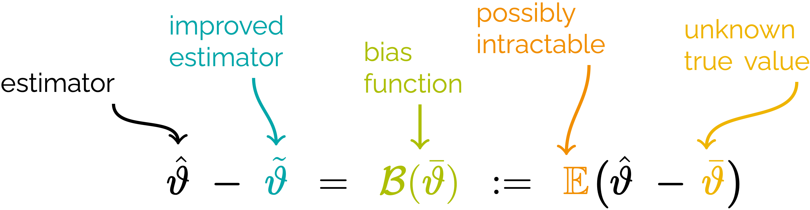

Empirical bias-reducing adjustments for Item Response Theory (IRT) models
Haziq Jamil ![]()
Research Specialist, BAYESCOMP @ CEMSE-KAUST
Joint work with Ioannis Kosmidis (Warwick)
October 13, 2025
Introduction
In educational assessments, data \[ \mathbf Y_s^\top=(Y_{s1},\dots,Y_{sp}) \]
are composed of several test items from students indexed \(s=1,\dots,n\). Each item is marked either correct (\(Y_{si}=1\)) or wrong (\(Y_{si}=0\)), \(i=1,\dots,p\).
It is common to enquire, from this set of data, the reliability and validity of the assessment, including:
- How difficult is each test item?
- How well do they discriminate between students of different ability levels?
- Can I accurately estimate students’ abilities?
Example
A typical data set
| Student | Item1 | Item2 | Item3 | Item4 | Item5 | |
|---|---|---|---|---|---|---|
| 1 | 1 | 1 | 1 | 1 | 1 | |
| 2 | 0 | 1 | 1 | 1 | 1 | |
| 3 | 1 | 1 | 0 | 1 | 1 | |
| 4 | 1 | 1 | 1 | 1 | 0 | |
| 5 | 1 | 1 | 1 | 1 | 0 | |
| 6 | 0 | 0 | 1 | 1 | 0 | |
| 7 | 1 | 0 | 0 | 0 | 0 | |
| 8 | 0 | 0 | 0 | 1 | 0 | |
| 9 | 1 | 0 | 0 | 0 | 0 | |
| 10 | 0 | 0 | 0 | 0 | 0 | |
Example (cont.)
Simple sum scores and item difficulties
| Student | Item1 | Item2 | Item3 | Item4 | Item5 | Score |
|---|---|---|---|---|---|---|
| 1 | 1 | 1 | 1 | 1 | 1 | 5 |
| 2 | 0 | 1 | 1 | 1 | 1 | 4 |
| 3 | 1 | 1 | 0 | 1 | 1 | 4 |
| 4 | 1 | 1 | 1 | 1 | 0 | 4 |
| 5 | 1 | 1 | 1 | 1 | 0 | 4 |
| 6 | 0 | 0 | 1 | 1 | 0 | 2 |
| 7 | 1 | 0 | 0 | 0 | 0 | 1 |
| 8 | 0 | 0 | 0 | 1 | 0 | 1 |
| 9 | 1 | 0 | 0 | 0 | 0 | 1 |
| 10 | 0 | 0 | 0 | 0 | 0 | 0 |
| Difficulty | 4 | 5 | 5 | 3 | 7 |
Example (cont.)
Item discrimination
| Student | Item1 | Item2 | Item3 | Item4 | Item5 | Score |
|---|---|---|---|---|---|---|
| 1 | 1 | 1 | 1 | 1 | 1 | 5 |
| 2 | 0 | 1 | 1 | 1 | 1 | 4 |
| 3 | 1 | 1 | 0 | 1 | 1 | 4 |
| 4 | 1 | 1 | 1 | 1 | 0 | 4 |
| 5 | 1 | 1 | 1 | 1 | 0 | 4 |
| Difficulty | 1 | 0 | 1 | 0 | 2 |
| 6 | 0 | 0 | 1 | 1 | 0 | 2 |
| 7 | 1 | 0 | 0 | 0 | 0 | 1 |
| 8 | 0 | 0 | 0 | 1 | 0 | 1 |
| 9 | 1 | 0 | 0 | 0 | 0 | 1 |
| 10 | 0 | 0 | 0 | 0 | 0 | 0 |
| Difficulty | 3 | 5 | 4 | 3 | 5 |
Item Response Theory (IRT) models
Assume independent Bernoulli responses, i.e. \[ Y_{si} = \begin{cases} 1 \text{ (correct)} & \text{w.p. } \pi_{si} \\ 0 \text{ (wrong)}& \text{w.p. } 1-\pi_{si} \end{cases} \]
Model success probabilities using the two-parameter logistic (2PL) model: \[ \pi_{si}(\mathbf{z}, \boldsymbol{\theta}) := \Pr(Y_{si} = 1 \mid \mathbf{z}, \boldsymbol{\theta}) = \frac{e^{a_i(z_s - b_i)}}{1 + e^{a_i(z_s - b_i)} } \] where
- \(\mathbf z=(z_1,\dots,z_n)^\top\) are individual latent traits;
- \(\boldsymbol{\theta}=(\mathbf a^\top, \mathbf b^\top)^\top\) are item parameters, including
- discrimination parameters \(\mathbf a=(a_1,\dots,a_p)^\top\); and
- difficulty parameters \(\mathbf b=(b_1,\dots,b_p)^\top\).
The 2PL is a member of the wide class of IRT models (e.g. 1PL a.k.a. Rasch model, 3PL, 4PL, MIRT, partial credit model, etc.).
Interpretation
Effect of item difficulties on response probabilities
Interpretation
Effect of item discriminations on response probabilities
Estimation via maximum marginal likelihood (MML)
Maximum marginal likelihood (MML) estimation [c.f. joint maximum likelihood (JML)] requires an additional assumption: \(z_s \overset{\text{iid}}\sim N(0, 1)\).
Given data \(\mathbf Y = \mathbf y\), the MML involves maximisation of the likelihood \[ L(\mathbf\theta) = \prod_{s=1}^n \int \prod_{i=1}^p \pi_{si}(\mathbf z,\boldsymbol\theta)^{y_{si}}\big(1-\pi_{si}(\mathbf z,\boldsymbol\theta)\big)^{1-y_{si}} \phi(z_s) \ \text{d} z_s \]
This intractable integral is usually overcome using quadrature rules.
Many software to fit IRT models use MML, e.g.
{mirt}(Chalmers 2012) and{ltm}(Rizopoulos 2007).Bayesian: Stan via
{brms}(Bürkner 2021), and even INLA too.
Small sample bias
- Bias from MML estimates is \(O(n^{-1})\), so in finite samples the bias is typically non-zero (Lord 1986), though generally less biased than JML.
- Parameters are consistent only when model is correctly specified (Bock and Aitkin 1981).
- MML is more robust to sample size variations and provides more stable item parameter estimates (Engelen 1987).
Bias correction

| Method | Model | \(\mathcal{B}(\bar\vartheta)\) | Type |
Requirements
|
|||
|---|---|---|---|---|---|---|---|
| \(\mathbb{E}(\cdot)\) | \(\hspace{2pt} \partial \cdot \hspace{2pt}\) | \(\hspace{4pt} \hat\vartheta \hspace{4pt}\) | |||||
| 1 | Asymptotic bias correction | full | analytical | explicit | ✓ | ✓ | ✓ |
| 2 | Adjusted score functions | full | analytical | implicit | ✓ | ✓ | ✗ |
| 3 | Bootstrap | partial | simulation | explicit | ✗ | ✗ | ✓ |
| 4 | Jackknife | partial | simulation | explicit | ✗ | ✗ | ✓ |
| 5 | Indirect inference | full | simulation | implicit | ✗ | ✗ | ✓ |
| 6 | Explicit RBM | partial | analytical | explicit | ✗ | ✓ | ✓ |
| 7 | Implicit RBM | partial | analytical | implicit | ✗ | ✓ | ✗ |
شكراً جزيلاً
References
Bock, R. Darrell, and Murray Aitkin. 1981. “Marginal Maximum Likelihood Estimation of Item Parameters: Application of an EM Algorithm.” Psychometrika 46 (4): 443–59. https://doi.org/10.1007/BF02293801.
Bürkner, Paul-Christian. 2021. “Bayesian Item Response Modeling in r with Brms and Stan.” Journal of Statistical Software 100: 1–54.
Chalmers, R Philip. 2012. “Mirt: A Multidimensional Item Response Theory Package for the r Environment.” Journal of Statistical Software 48: 1–29.
Cordeiro, Gauss M., and Peter McCullagh. 1991. “Bias Correction in Generalized Linear Models.” Journal of the Royal Statistical Society Series B: Statistical Methodology 53 (3): 629–43.
Efron, Bradley. 1975. “Defining the Curvature of a Statistical Problem (with Applications to Second Order Efficiency).” The Annals of Statistics, 1189–1242. https://www.jstor.org/stable/2958246.
———. 1982. The Jackknife, the Bootstrap and Other Resampling Plans. Society for Industrial and Applied Mathematics. https://doi.org/10.1137/1.9781611970319.
Efron, Bradley, and R. J. Tibshirani. 1994. An Introduction to the Bootstrap. New York: Chapman and Hall/CRC. https://doi.org/10.1201/9780429246593.
Engelen, Ronald Joseph Hubert. 1987. “A Review of Different Estimation Procedures in the Rasch Model.”
Firth, David. 1993. “Bias Reduction of Maximum Likelihood Estimates.” Biometrika 80 (1): 27–38. https://doi.org/10.1093/biomet/80.1.27.
Gourieroux, C., A. Monfort, and E. Renault. 1993. “Indirect Inference.” Journal of Applied Econometrics 8 (S1): S85–118. https://doi.org/10.1002/jae.3950080507.
Hall, Peter, and Michael A. Martin. 1988. “On Bootstrap Resampling and Iteration.” Biometrika 75 (4): 661–71.
Kosmidis, Ioannis, and David Firth. 2009. “Bias Reduction in Exponential Family Nonlinear Models.” Biometrika 96 (4): 793–804.
Lord, Frederic M. 1986. “Maximum Likelihood and Bayesian Parameter Estimation in Item Response Theory.” Journal of Educational Measurement 23 (2): 157–62. https://www.jstor.org/stable/1434513.
MacKinnon, James G., and Anthony A. Smith Jr. 1998. “Approximate Bias Correction in Econometrics.” Journal of Econometrics 85 (2): 205–30.
Quenouille, Maurice H. 1956. “Notes on Bias in Estimation.” Biometrika 43 (3/4): 353–60. https://www.jstor.org/stable/2332914.
Rizopoulos, Dimitris. 2007. “Ltm: An r Package for Latent Variable Modeling and Item Response Analysis.” Journal of Statistical Software 17: 1–25.